Fresh Energy — iOS, Android, Web UI Design, UX Design, Communication Design
Fresh Energy builds customer-centric products based on smart meter data, with a focus on helping users understand their energy consumption. Based in Berlin, they’ve raised over €6m since 2017.
Taking over an existing project and reworking the UX and UI without alienating existing users — while adding features aligned withbusiness goals. Also, product had to be designed in a way that allowed whitelabeling, since that was part of the business model. I was requested to come up with a new brand solution as well.
Working closely with product and business teams aligned me with their respective goals. We invited users for in-house testing to identify user goals and define a feature roadmap. We also opened a private Facebook group for our users — with weekly surveys on features they would like to see and problems they were experiencing. I facilitated design sprints to bring new features to life. A deep dive into company values in multiple sessions with the management kicked off a complete brand redesign.
Results
Tab bar navigation replaced the old side-menu navigation. Based on user interviews, new sections — profile and household information — were added to their expected places. To support future business goals, a services section was added as well.
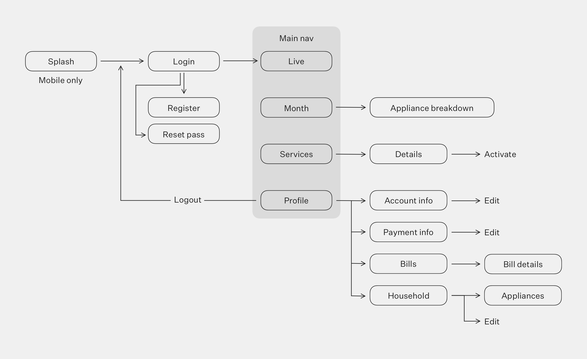Main use cases — checking live and historic electricity consumption — were simplified and enriched with additional ways of displaying existing data. Live cost was added for the live view, whiledaily consumption was added for the historic overview.
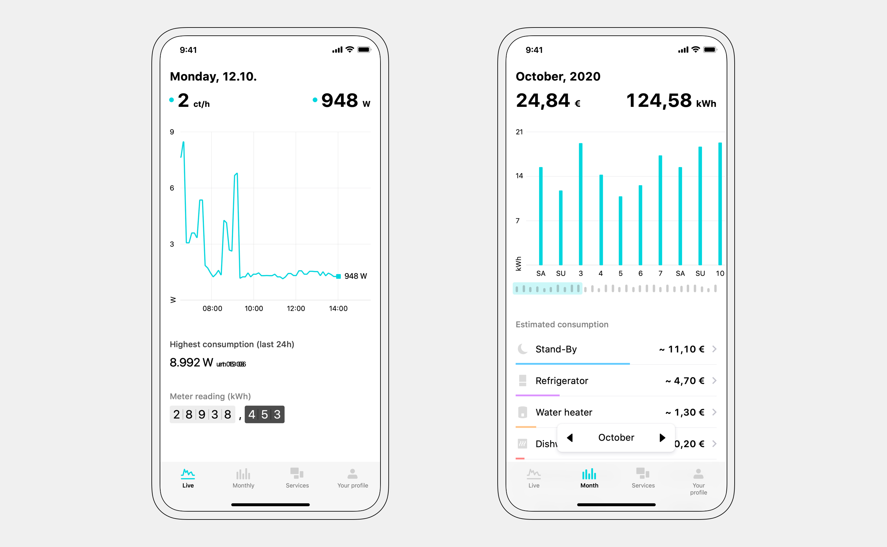Up to 2 second resolution for consumption data is available.
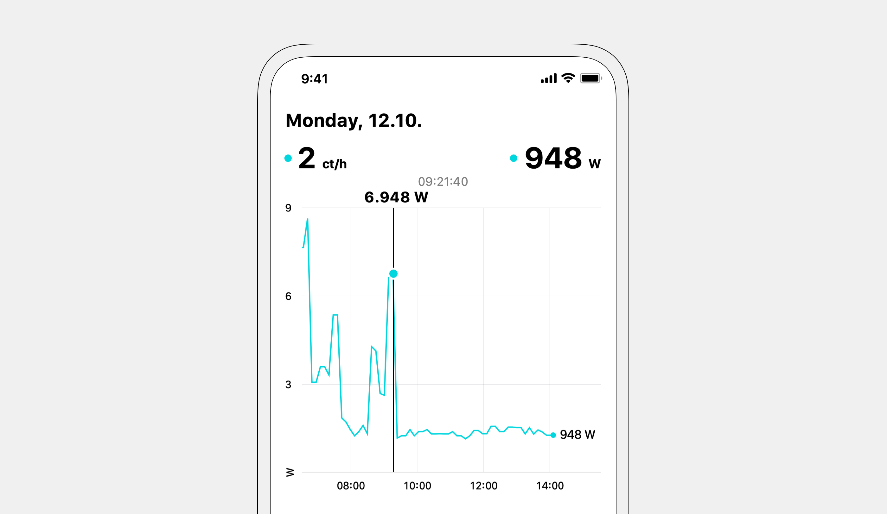Month navigation was moved to the bottom to improve usability. Specific appliances are dissagregated in the app — color coded bars communicate relative consumption between detected appliances.
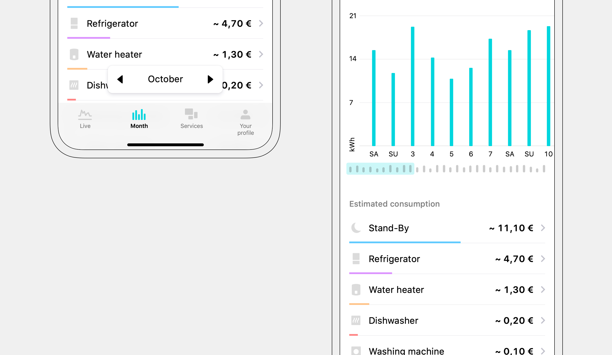A live meter readout was implemented as well — meaning Fresh Energy users can check their meter status without a trip to the basement.
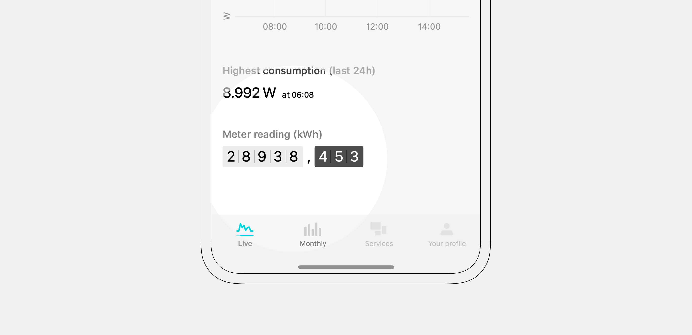To change their data, users had to call customer support — there was no edit functionality in the app. Weekly average was 6 support calls per 1000 users. I added all the information we had on our users to the profile section and made them editable.
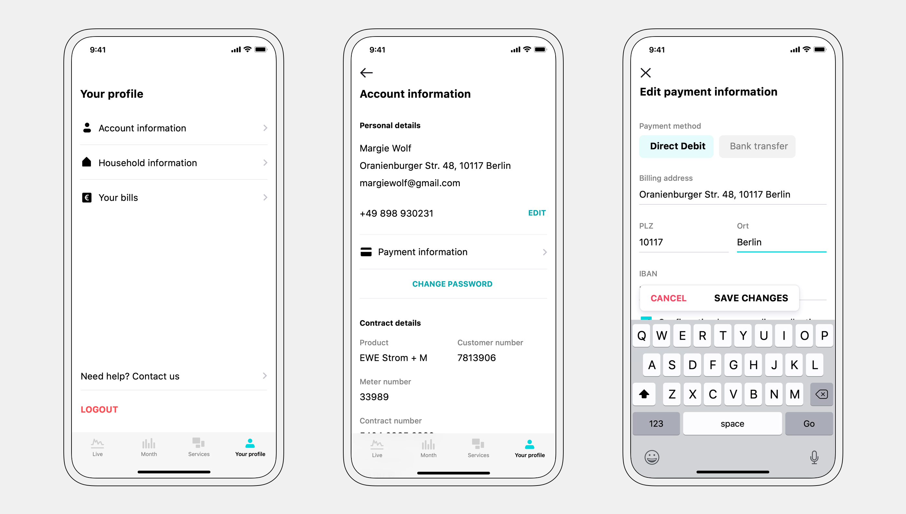Using the data we already had and working with the product and business teams, I was able to ideate new, innovative services. By using only existing data, we saved precious development time and reduced time to market.
Before building a service, we assessed its viability with a simple pilot project. Pilot projects were done through email communication and manual work. After confirming the demand, we went ahead with the actual implementation in the product. Design was tested during and after the UI/UX phase.
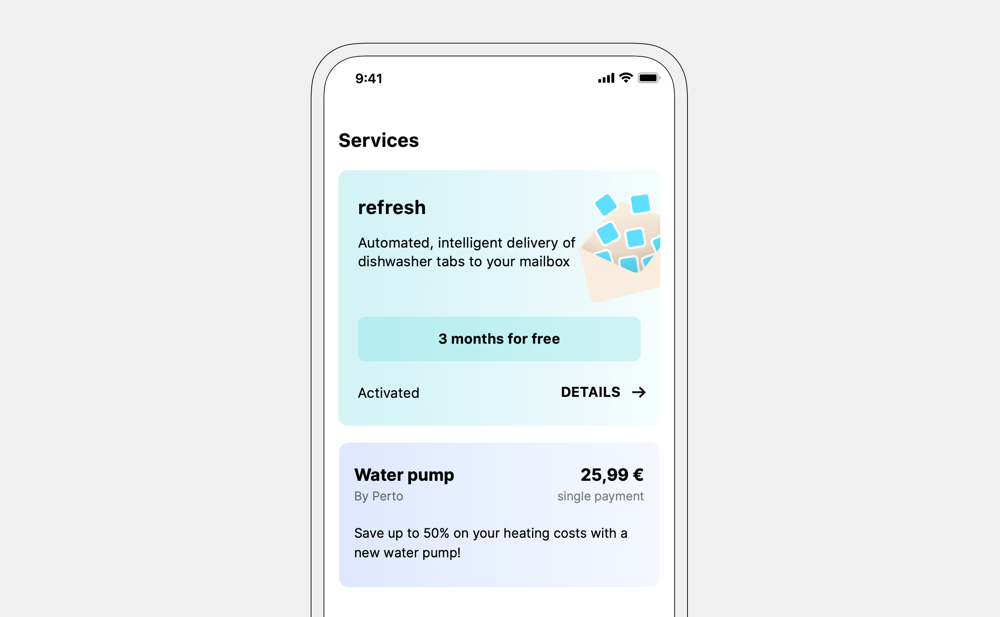“Refresh” is a subscription service, based on existing data. An algorithm detects how many times our users use their dishwasher. A package of dishwasher tabs is sent out so it arrives exactly when they run out — giving our users a magical experience.
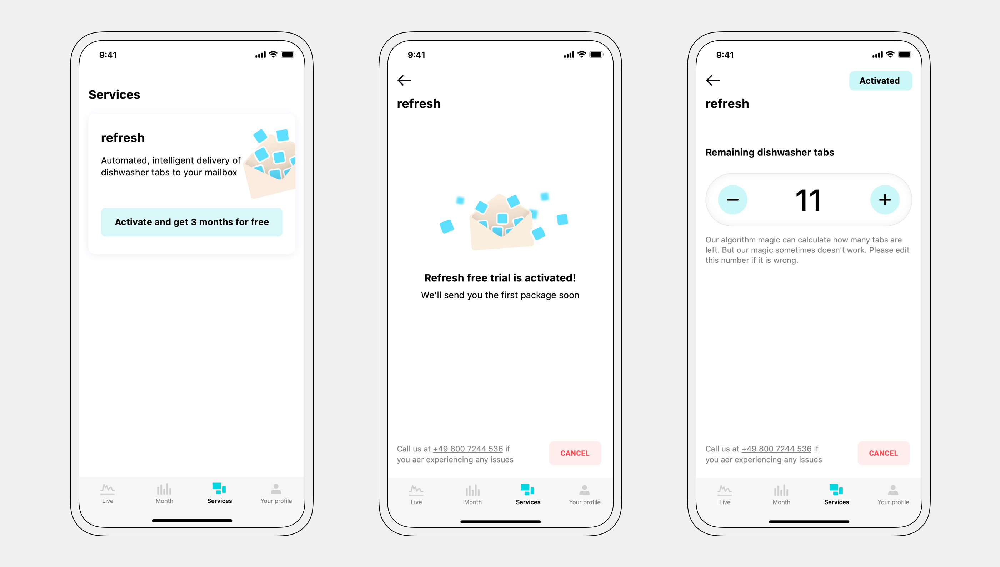Free trial was offered to increase adoption.
Through research and pilot projects, we found out that most of our users had no idea if their fridge spending was below or above the average for given fridge size. The app analyzes our users fridge consumption and compares it to our database. Based on the comparison, we show our users potential monthly savings — together with the amortization time for a new fridge.
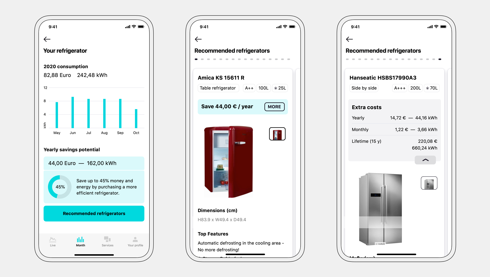I facilitated a short 3 day design to define and quickly prototype this feature. We found out that our users primarily wanted to upgrade to a bigger fridge — this impacted the final design. Fridges that cost more were added to the comparison as well.
The web version was designed with the same basic functionality — but expanded with more information due to more screen real-estate.
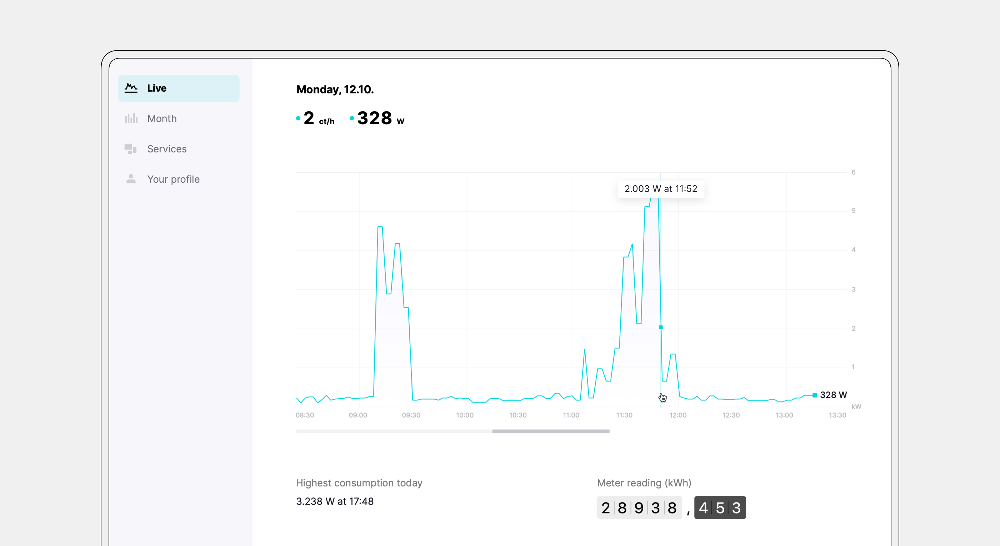A graphical way of displaying electric consumption was added to the desktop version.
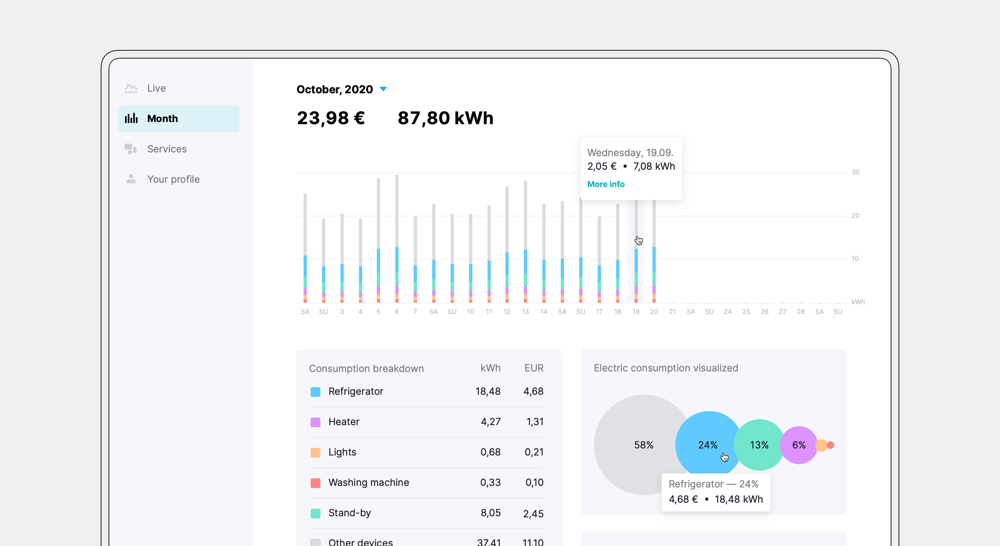For bills, a quick overview with the most important information is shown on the same screen.
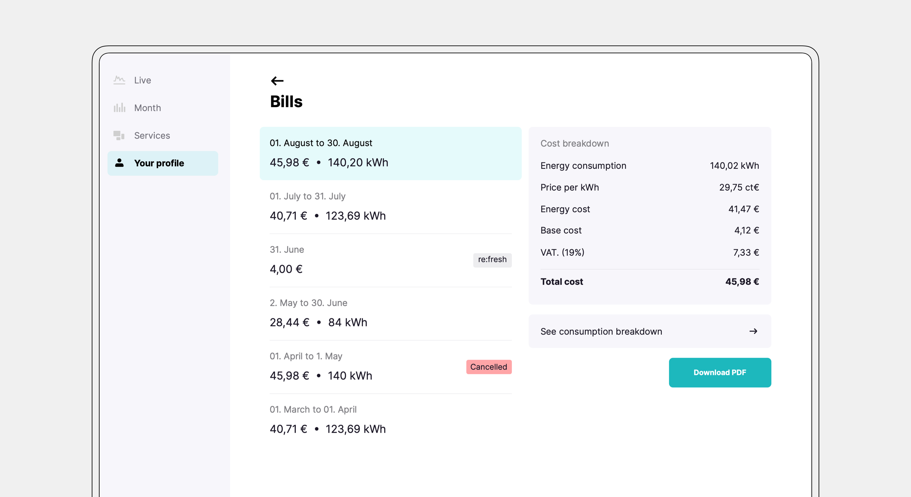The UI was designed to allow partners to adapt it to their branding. Colors and font sizes are used sparringly.
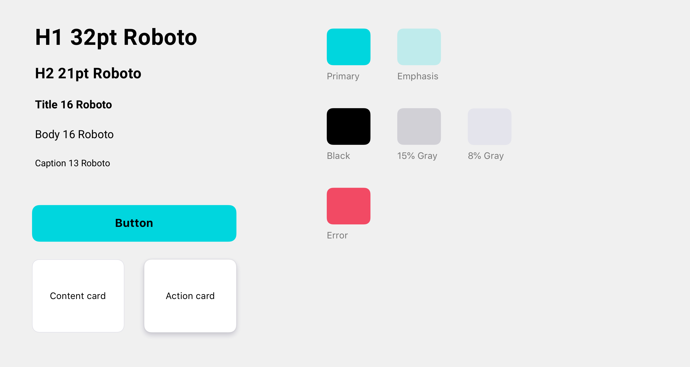A new logo was brought to life — together with company goals and values. It plays off the combination of letters F and E — representing transformer coils — transforming our users' experience with electricity.
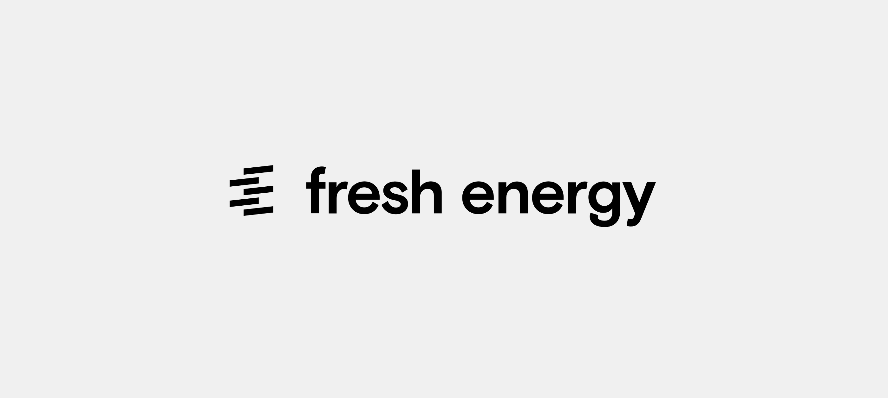 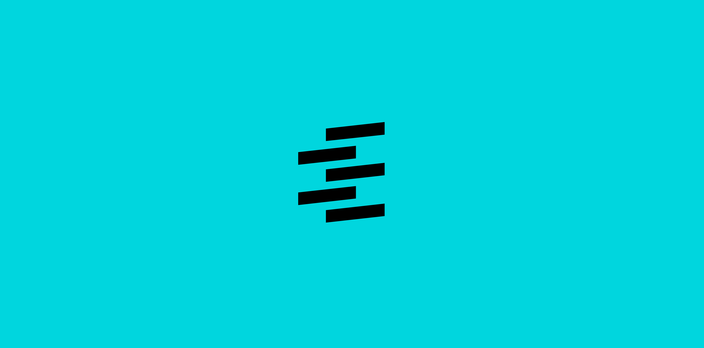Since part of our business model was whitelabeling our product, I designed an admin dashboard. All users and smart meters are visible in the dashboard. Admins can quickly create, delete and connect meters to users.
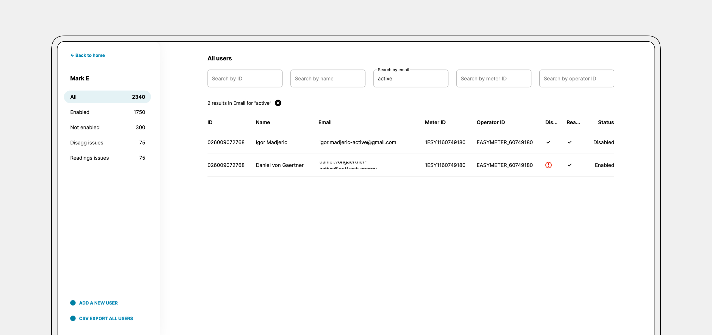Issues with either users or meters are communicated clearly so the support department can act quickly.
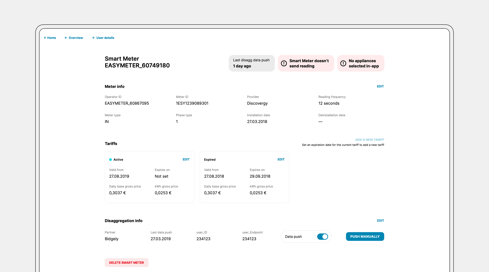The dashboard was a great selling point since most of our business customers didn't have a similar solution for their userbase.
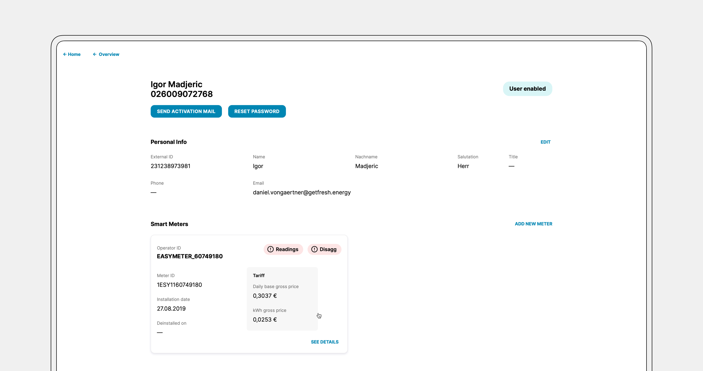— thank you